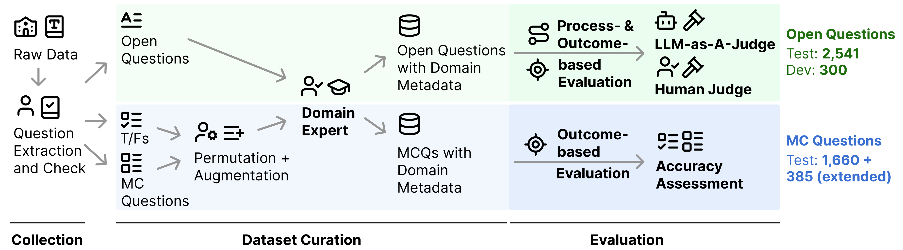
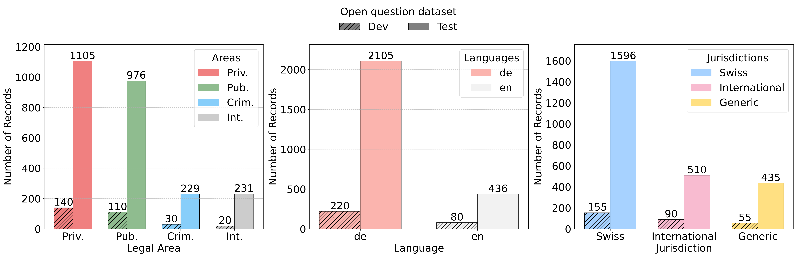
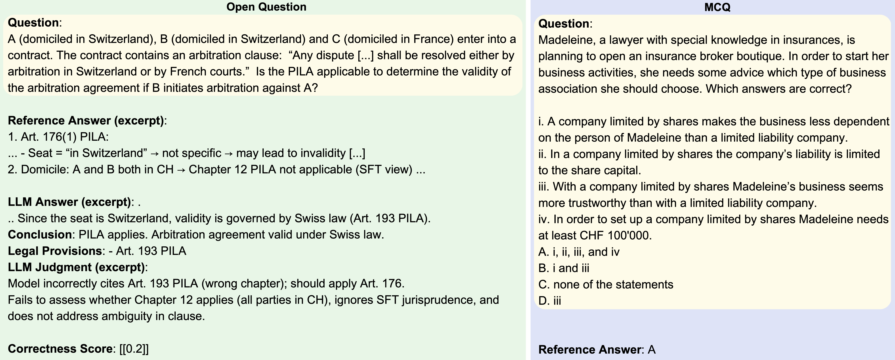

Long-form legal reasoning remains a key challenge for large language models (LLMs) in spite of recent advances in test-time scaling. To address this, we introduce LEXam, a novel benchmark derived from 340 law exams spanning 116 law school courses across a range of subjects and degree levels. The dataset comprises 7,537 law exam questions in English and German. It includes both long-form, open-ended questions and multiple-choice questions with varying numbers of options. Besides reference answers, the open questions are also accompanied by explicit guidance outlining the expected legal reasoning approach such as issue spotting, rule recall, or rule application. Our evaluation on both open-ended and multiple-choice questions present significant challenges for current LLMs; in particular, they notably struggle with open questions that require structured, multi-step legal reasoning. Moreover, our results underscore the effectiveness of the dataset in differentiating between models with varying capabilities. Deploying an ensemble LLM-as-a-Judge paradigm with rigorous human expert validation, we demonstrate how model-generated reasoning steps can be evaluated consistently and accurately, closely aligning with human expert assessments. Our evaluation setup provides a scalable method to assess legal reasoning quality beyond simple accuracy metrics.
| # | LLMs | Judge Scores on Open Questions |
|---|---|---|
| 1 | GPT-5🥇 | 70.20 |
| 2 | Gemini-2.5-Pro🥈 | 67.40 |
| 3 | Claude-3.7-Sonnet🥉 | 62.86 |
| 4 | Claude-4.5-Sonnet | 62.76 |
| 5 | GPT-5-mini | 60.32 |
| 6 | GPT-4.1 | 57.50 |
| 7 | DeepSeek-V3.2-Exp | 57.42 |
| 8 | GPT-4o | 56.93 |
| 9 | DeepSeek-V3.2-reasoner | 56.53 |
| 10 | DeepSeek-V3.2-chat | 55.99 |
| 11 | DeepSeek-R1 | 55.91 |
| 12 | Gemini-3-Pro-preview | 55.38 |
| 13 | GPT-4.1-mini | 54.58 |
| 14 | DeepSeek-V3 | 52.53 |
| 15 | GPT-OSS-120B | 51.74 |
| 16 | O3-mini | 48.13 |
| 17 | Llama-4-Maverick | 47.25 |
| 18 | Qwen3-235B | 47.25 |
| 19 | QwQ-32B | 44.36 |
| 20 | GPT-4.1-nano | 43.68 |
| 21 | Qwen3-Next | 43.37 |
| 22 | Llama-3.1-405B-it | 43.14 |
| 23 | GPT-4o-mini | 42.55 |
| 24 | Gemma-3-12B-it | 41.29 |
| 25 | Llama-3.3-70B-it | 41.27 |
| 26 | Qwen3-32B | 40.00 |
| 27 | Phi-4 | 38.54 |
| 28 | Apertus-70B | 34.70 |
| 29 | GPT-OSS-20B | 32.12 |
| 30 | Gemma-2-9B-it | 27.41 |
| 31 | GPT-5-nano | 27.25 |
| 32 | EuroLLM-9B-it | 22.95 |
| 33 | Apertus-8B | 22.44 |
| 34 | Qwen-2.5-7B-it | 16.67 |
| 35 | Ministral-8B-it | 14.88 |
| 36 | Llama-3.1-8B-it | 10.00 |
| # | LLMs | Accuracy on Multiple-Choice Questions |
|---|---|---|
| 1 | GPT-5🥇 | 62.65 |
| 2 | Claude-4.5-Sonnet🥈 | 58.01 |
| 3 | Claude-3.7-Sonnet🥉 | 57.23 |
| 4 | Gemini-2.5-Pro | 55.72 |
| 5 | GPT-5-mini | 54.82 |
| 6 | GPT-4.1 | 54.40 |
| 7 | GPT-4o | 53.13 |
| 8 | DeepSeek-V3.2-Exp | 53.07 |
| 9 | DeepSeek-R1 | 52.41 |
| 10 | Llama-4-Maverick | 49.10 |
| 11 | GPT-4.1-mini | 48.49 |
| 12 | Qwen3-235B | 48.19 |
| 13 | QwQ-32B | 47.83 |
| 14 | GPT-OSS-120B | 47.71 |
| 15 | GPT-5-nano | 47.11 |
| 16 | DeepSeek-V3 | 46.57 |
| 17 | Qwen3-32B | 45.30 |
| 18 | O3-mini | 44.22 |
| 19 | Qwen3-Next | 43.31 |
| 20 | Llama-3.1-405B-it | 43.19 |
| 21 | GPT-4o-mini | 40.96 |
| 22 | GPT-OSS-20B | 40.78 |
| 23 | Phi-4 | 40.66 |
| 24 | GPT-4.1-nano | 39.22 |
| 25 | Gemma-3-12B-it | 29.94 |
| 26 | Qwen-2.5-7B-it | 29.28 |
| 27 | Llama-3.3-70B-it | 28.19 |
| 28 | Ministral-8B-it | 26.27 |
| 29 | Gemma-2-9B-it | 25.36 |
| 30 | Llama-3.1-8B-it | 24.04 |
| 31 | EuroLLM-9B-it | 23.31 |

LEXam data generation pipeline.

The statistics of LEXam dataset.

LEXam sample open and multiple-choice question.
@article{fan2025lexam,
title={LEXam: Benchmarking Legal Reasoning on 340 Law Exams},
author={Fan, Yu and Ni, Jingwei and Merane, Jakob and Tian, Yang and Hermstrüwer, Yoan and Huang, Yinya and Akhtar, Mubashara and Salimbeni, Etienne and Geering, Florian and Dreyer, Oliver and Brunner, Daniel and Leippold, Markus and Sachan, Mrinmaya and Stremitzer, Alexander and Engel, Christoph and Ash, Elliott and Niklaus, Joel},
journal={arXiv preprint arXiv:2505.12864},
year={2025}
}
We welcome contributions of datasets to expand LEXam.
Opens in a new tab. A Google account is required for file uploads.
If you have any questions about contributing, please contact us at: lexam.benchmark@gmail.com.